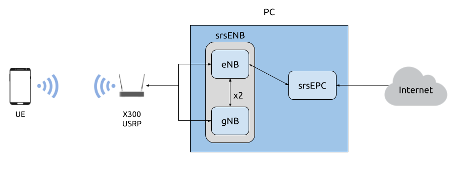

5G NSA 现货 UE
提示
srsENB 支持 NSA 和 SA 操作模式的原型 5G 功能，但是，这些功能不再处于积极开发中。相反，我们推荐 srsRAN Project，我们的 ORAN-native 5G CU/DU 解决方案。
警告
在蜂窝频段上运行专用 5G NSA 网络可能会受到您所在辖区的严格监管。寻求批准 在此之前先咨询您的电信监管机构。
简介
本应用笔记展示了如何使用 srsENB、srsEPC 和支持 5G 的 COTS UE 创建您自己的 5G NSA 网络。连接COTS UE时，网络设置有两种选择：网络可以保持原样，UE可以在网络内进行本地通信，或者EPC可以通过P-GW连接到互联网，允许UE访问互联网进行网页浏览、电子邮件等。
网络和硬件概述

简化的网络架构
设置 5G NSA 网络并连接 5G COTS UE 需要以下内容：
具有基于 Linux 操作系统的 PC，已安装并构建 srsRAN 4G
具有独立 RF 链的双通道 RF 前端
A 5G NSA 功能 UE
USIM/SIM 卡（必须是测试卡或可编程卡，且密钥已知）
对于此实施，使用以下设备：
配备 10GigE NIC 的台式计算机（至少为第 6 代 i7 或类似型号）
X300 USRP
配备 Sysmocom USIM 的 OnePlus Nord 5G
UE 注意事项
srsRAN 4G 当前的限制之一是 LTE 和 NR 载波必须使用相同的 15 kHz 子载波间隔 (SCS)。 不幸的是，这限制了可与 COTS 电话一起使用的频段组合，因为并非所有组合 每个基带芯片都可以实现。
例如，迄今为止大多数欧洲部署中使用的 NR 频段 n78（使用 30 kHz SCS）理论上也支持 15 kHz SCS。 然而，我们尝试过的所有手机都无法支持该频段的 15 kHz。使用以下命令检查您的手机支持的频段组合 这个网页.
因此，我们建议对 LTE 和 NR 载波使用 FDD 频段，例如对 LTE 使用频段 20，对 NR 使用频段 n3。 本应用说明中使用的 OnePlus 5G Nord 支持这两个频段。
除了来自基带硬件的限制之外，还有一些其他陷阱可能会或可能不允许手机连接到 5G 网络。
许多 5G 手机可能包含运营商策略文件，该文件可能会根据 USIM 的 PLMN（IMSI 的前 6 位数字）限制电话的 5G 功能。运营商策略文件通常不包括测试网络 PLMN，因此设置测试 PLMN 可能会导致 5G 被禁用。如果可能，使用屏蔽盒并通过商业运营商 PLMN 配置网络可以避免策略文件问题。
在某些手机上，使用测试 USIM 时，您可能需要使用以下命令激活 5G NR
*#*#4636#*#*.如果您的手机支持“Smart 5G”，请禁用此选项，因为它可能会强制手机设置为 4G 并激活漫游。
依赖关系
RF驱动程序
我们仅使用 Ettus Research 设备测试了 NSA 模式 超高清。对于本应用说明，我们使用 UHD 版本 v3.15 的 USRP X310。
srsRAN 4G
如果您尚未这样做，请安装最新版本的 srsRAN 4G 和依赖项。这在 安装指南.
注意事项
如果您安装或更新驱动程序 之后 安装 srsRAN 4G 后，您将必须重新构建 srsRAN 4G。
检查驱动程序
检查运行时是否已拾取 RF 驱动程序 cmake .. 在构建过程中，您可以运行：
grep <驱动程序> srsRAN_4G/build/CMakeCache.txt
如果您使用 UHD 作为驱动程序，则当 srsRAN 4G 成功检测到它时，您应该会看到以下输出 cmake .. 运行：
$ grep UHD -m 4 CMakeCache.txt
//Enable UHD
ENABLE_UHD:BOOL=ON
UHD_INCLUDE_DIRS:PATH=/usr/local/include
UHD_LIBRARIES:FILEPATH=/usr/local/lib/libuhd.so
配置
网络必须配置为支持 NSA 网络并与 COTS UE 配合使用。以下 srsRAN 4G 配置文件需要更新：
需要编辑 enb.conf 和 epc.conf 文件，以使 MCC 和 MNC 值与 USIM 的值匹配。 需要更新 rr.conf 以添加 NR 单元。需要更新 user_db.csv 文件，以便它包含与 UE 中使用的 USIM 卡关联的凭据。
还需要将 APN 添加到 COTS UE 以允许其访问互联网。这反映在 EPC 配置文件中。
上面附有用于此示例设置的配置文件以供参考。用户可能需要编辑相关字段，以便网络支持其特定的 COTS UE。
将 APN 添加到 COTS UE
要将 APN 添加到 UE，请导航至正在使用的 USIM 的网络设置。从这里可以添加 APN，通常在 访问 点 名字。使用名称和 APN 创建新的 APN 测试123，如下图所示。

所有其他设置可以保留默认选项。这里的APN名称实际上并不重要，只要UE和EPC之间的命名保持一致即可。
血清ENB
enb配置文件
的 中冶集团 & 跨国公司 必须在 enb.conf 中更新代码以反映 sim 使用的值。可以在配置文件的以下部分中编辑这些内容：
#####################################################################
[恩布]
enb_id = 0x19B
MCC = 901
跨国公司 = 70
内存地址 = 127.0.1.100
gtp_bind_地址 = 127.0.1.1
s1c_bind_addr = 127.0.1.1
n_prb = 50
#tm = 4
#nof_端口 = 2
#####################################################################
对于 X310，我们通过以下设备参数看到了可接受的结果：
[射频]
设备参数=类型=x300,时钟=外部的,采样率=11.52e6,lo_freq_offset_hz=11.52e6
其余选项可以保留默认值。它们可以根据需要进行更改，但进一步修改 无需成功连接 COTS UE。
日志配置文件
对 rr.conf 文件的主要更改是将 NR 单元添加到单元列表中。这被添加到文件的末尾：
编号单元列表 =
(
{
射频端口 = 1;
小区编号 = 0x02;
塔克 = 0x0007;
PCI = 500;
根序列idx = 204;
// TDD:
//dl_arfcn = 634240;
//乐队 = 78;
// FDD:
dl_arfcn = 368500;
乐队 = 3;
}
);
这里我们添加了 TDD 和 FDD 配置。对于本示例，我们将使用 FDD 配置，因此 TDD 配置被注释掉。检查 UE 型号是否支持所选频段。
核心
EPC配置文件
必须修改 EPC 配置文件以反映 中冶集团 & 跨国公司，以及 接入点网络 由 UE 使用：
#####################################################################
[嗯]
mme_code = 0x1a
mme_group = 0x0001
塔克 = 0x0007
MCC = 901
跨国公司 = 70
mme_bind_地址 = 127.0.1.100
接入点 = 测试123
域名地址 = 8.8.8.8
加密算法 = 欧洲经济区0
完整性算法 = 环评1
分页定时器 = 2
#####################################################################
用户数据库.csv
下面的列表描述了包含在 用户数据库.csv 文件。作为标准，该文件
将附带输入到 CSV 中的两个虚拟 UE，这些有助于提供如何填写文件的示例。
名称：任何人类可读的值
Auth：认证算法（xor/mil）
IMSI：UE的IMSI值
密钥：UE的密钥，十六进制值
OP Type：操作员代码类型（OP/OPc）
OP：OP/OPc 代码，十六进制值
AMF：认证管理字段，十六进制值必须大于8000
SQN：UE 的验证新鲜度的序列号
QCI：UE 默认承载的 QoS 类标识符
IP Alloc：SPGW 的 IP 分配策略
对于 COTS UE，AMF、SQN、QCI 和 IP Alloc 字段可以填充以下值：
9000, 000000000000, 9, 动态
这将生成一个 user_db.csv 文件，应如下所示：
#
# .csv 将 UE 的信息存储在 HSS 中
# 保留以下格式：“Name,Auth,IMSI,Key,OP_Type,OP,AMF,SQN,QCI,IP_alloc”
#
# 名称：人类可读的名称，有助于区分 UE。被 HSS 忽略
# IMSI: UE的IMSI值
# Auth：UE使用的认证算法。有效算法是异或
#（异或）和里程（百万）
# Key：UE的密钥，其他密钥均源自该密钥。以十六进制存储
# OP_Type：操作员的代码类型，可以是 OP 或 OPc
# OP/OPc：操作员代码/加密操作员代码，以十六进制存储
# AMF：认证管理字段，以十六进制存储
# SQN：UE 的验证新鲜度的序列号
# QCI：UE 默认承载的 QoS 类标识符。
# IP_alloc：SPGW 的 IP 分配策略。
# 使用“动态”SPGW 将自动分配 IP
# 有了有效的 IPv4（例如“172.16.0.2”），UE 将拥有静态分配的 IP。
#
# 注意：以“#”开头的行将被忽略并被覆盖
COTS_UE,米尔,901700000020936,4933f9c5a83e5718c52e54066dc78dcf,OPC,FC632f97bd249ce0d16ba79e6505d300,9000,0000000060f8,9,动态
auth、IMSI、密钥、OP 类型和 OP 是与所使用的 USIM 关联的值。分配给 AMF、SQN、QCI 和 IP Alloc 的值是上面的默认值，对此进行了进一步解释 这里 在 EPC 文档中。确保每个条目中的值之间没有空格，因为这将导致文件读取不正确。
伪装脚本
要允许 UE 通过 EPC 连接到互联网，必须运行预先配置的伪装脚本。这可以在 srsRAN_4G/srsepc.
伪装脚本启用 IP 转发并设置网络地址转换以在 srsRAN 4G 网络和外部网络之间传递流量。每次重新启动计算机时都必须运行该脚本，并且可以在 srsRAN 4G 运行之前或运行时执行。在运行此脚本之前，UE 将无法与更广泛的互联网进行通信。
在运行脚本之前，确定用于将 PC 连接到互联网的接口非常重要。该脚本需要将此作为参数，如下所示：
路线
您将看到类似于以下内容的输出：
内核 知识产权 路由 表
目的地 网关 基因面膜 旗帜 公制 参考号 使用 伊法斯
默认 _网关 0.0.0.0 UG 100 0 0 enxc03ebab05013
10.12.1.0 0.0.0.0 255.255.255.0 U 100 0 0 enxc03ebab05013
与相关的接口 (Iface) 默认 目的地是必须传递到 masq 中的目的地。脚本。在上面的输出中，这是 enxc03ebab05013 界面。
面具。现在可以从以下文件夹运行脚本： srsRAN_4G/srsEPC
须藤 ./srsepc_if_masq.嘘 <接口>
如果执行成功，您将看到以下消息：
伪装 接口 <接口>
配置文件、用户 DB 和 UE 现在已正确设置，以允许 COTS UE 连接到 eNB 和 Core。
连接到网络
将 COTS UE 连接到 srsRAN 4G 的最后一步是首先运行 EPC 和 eNB，然后从 UE 连接到该网络。 以下各节将概述如何实现这一点。
核心
首次运行 srsEPC：
须藤 SRSEPC
控制台上应显示以下输出：
建成 在 发布 模式 使用 提交 c892ae56b 上 分行 大师.
--- 软件 收音机 系统 EPC ---
阅读 配置 文件 /等/srsran_4G/EPC.会议...
高速钢 已初始化.
微机电系统 S11 已初始化
微机电系统 GTP-C 已初始化
微机电系统 已初始化. 中冶集团: 0xf901, 跨国公司: 0xff70
SPGW GTP-U 已初始化.
SPGW S11 已初始化.
SP-GW 已初始化.
血清ENB
现在启动 srsENB：
须藤 斯尔森布
控制台应显示以下或类似内容：
--- 软件 收音机 系统 LTE eNodeB ---
开幕 2 渠道 在 RF 装置=超高清 与 参数=类型=x300,时钟=外部的,采样率=11.52e6,lo_freq_offset_hz=23.04e6,发送帧大小=8000,接收帧大小=8000,发送帧数=64,接收帧数=64,无
[信息] [超高清] 操作系统; GNU C++ 版本 9.3.1 20200408 (红色 帽子 9.3.1-2); Boost_106900; 超高清_3.15.0.0-62-G7A3F1516
[信息] [记录] 快速路径 记录 残疾人 在 运行时.
开幕 USRP 渠道=2, 参数: 类型=x300,lo_freq_offset_hz=23.04e6,发送帧大小=8000,接收帧大小=8000,发送帧数=64,接收帧数=64,无=,主时钟速率=184.32e6
[信息] [超高清 RF] RF 超高清 通用 实例 建造的
[信息] [X300] X300 初始化 序列...
[信息] [X300] 最大 框架 尺寸: 8000 字节.
[信息] [X300] 收音机 1x 时钟: 184.32 兆赫兹
[信息] [0/DMAFIFO_0] 正在初始化 块 控制 (国家奥委会 身份证号: 0xF1F0D00000000000)
[信息] [0/DMAFIFO_0] 内建自测试 通过了 (吞吐量: 1315 MB/s)
[信息] [0/DMAFIFO_0] 内建自测试 通过了 (吞吐量: 1307 MB/s)
[信息] [0/电台_0] 正在初始化 块 控制 (国家奥委会 身份证号: 0x12AD100000000001)
[信息] [0/电台_1] 正在初始化 块 控制 (国家奥委会 身份证号: 0x12AD100000000001)
[信息] [0/DDC_0] 正在初始化 块 控制 (国家奥委会 身份证号: 0xDDC0000000000000)
[信息] [0/DDC_1] 正在初始化 块 控制 (国家奥委会 身份证号: 0xDDC0000000000000)
[信息] [0/DUC_0] 正在初始化 块 控制 (国家奥委会 身份证号: 0xD0C0000000000000)
[信息] [0/DUC_1] 正在初始化 块 控制 (国家奥委会 身份证号: 0xD0C0000000000000)
[信息] [多USRP] 1) 抓住 时间 过渡 在 聚苯硫醚 边缘
[信息] [多USRP] 2) 设置 次 下一个 聚苯硫醚 (同步地)
==== eNodeB 开始了 ===
类型 <t> 到 查看 痕迹
设置 频率: DL=806.0 兆赫兹, UL=847.0 兆赫兹 为了 cc_idx=0 nof_prb=50
设置 频率: DL=1842.5 兆赫兹, UL=1747.5 兆赫兹 为了 cc_idx=1 nof_prb=52
如果 eNB 已成功连接到核心，EPC 控制台现在应该打印更新：
已收到 S1 设置 请求.
S1 设置 请求 - 基站 名称: srsenb01, 基站 编号: 0x19b
S1 设置 请求 - 中冶集团:901, 跨国公司:70, PLMN: 651527
S1 设置 请求 - TAC 0, 乙-PLMN 0
S1 设置 请求 - 寻呼 不连续接收 v128
发送 S1 设置 回应
网络现已准备好供 COTS UE 连接。
UE
您现在可以通过以下步骤将 UE 连接到网络：
打开“设置”菜单并导航至“SIM 和网络”选项

打开此菜单并进入与正在使用的 USIM 关联的子菜单。它应该类似于以下内容：

在网络运营商下找到您刚刚使用 srsRAN 4G 实例化的网络。
选择 MMC 和 MNC 值组合的网络。然后，UE 应自动连接到网络。
确认连接
UE 连接到网络后，srsENB 和 srsEPC 的控制台输出可用于确认连接成功。
血清ENB
如果连接成功，则会出现 RACH 应该看到消息后面跟着一个 用户 <ID> 已连接 消息，其中“<ID>”是分配给 UE 的 RNTI：
==== eNodeB 开始了 ===
类型 <t> 到 查看 痕迹
设置 频率: DL=806.0 兆赫兹, UL=847.0 兆赫兹 为了 cc_idx=0 nof_prb=50
设置 频率: DL=1842.5 兆赫兹, UL=1747.5 兆赫兹 为了 cc_idx=1 nof_prb=52
用户 0x46 已连接
RACH: 插槽=7691, 抄送=0, 序言=41, 偏移量=1, 临时表=0x4602
-----------------DL----------------|-------------------------UL-------------------------
LTE 46 12 0 5 2.5k 4 0 0% | 25.7 9.4 23 23 17k 4 0 0% 0.0
号 4601 n/一个 0 0 0 0 0 0% | n/一个 n/一个 0 0 38k 4 0 0% 0.0
LTE 46 13 0 0 0 0 0 0% | n/一个 6.2 0 0 0 0 0 0% 0.0
号 4601 n/一个 0 0 0 0 0 0% | n/一个 n/一个 0 0 0 0 0 0% 0.0
LTE 46 13 0 0 0 0 0 0% | n/一个 6.2 0 0 0 0 0 0% 0.0
UE 现已连接到网络，并且现在应在每次开机时自动连接到该网络。 UE 现在还应该可以访问互联网 - 就像连接到商业 5G 网络一样。
故障排除
UE 未连接到网络
某些 UE 在检测在测试 PLMN（例如 00101）上运行的网络时遇到问题。使用您所在国家/地区的 MCC 可以增加找到网络的机会。当使用屏蔽环境时，使用本地商业网络的PLMN可能会看到更好的结果。
警告
为避免对当地商业网络造成干扰，请在屏蔽环境下进行测试。
NR载波误码率高
NR 调度器当前的限制之一是缺少动态 MCS 自适应。因此，固定MCS用于下行链路(PDSCH)和上行链路(PUSCH)传输。 默认情况下，我们使用 MCS 28 的最大值作为最大速率。然而，根据 RF 的条件，该值可能太高。在这种情况下，尝试使用较低的 MCS，例如：
[调度程序]
nr_pdsch_mcs = 10
nr_pusch_mcs = 10
埃特斯研究 USRP N310
N310 是另一种可用于 NSA 的设备。但是，需要对配置文件进行一些更改。
在 enb.conf 中，我们需要更改设备参数以选择正确的 RF 子设备（LTE 的频段 20 和 NR 的频段 n3 相距太远，无法使用默认值），并使用 N310 支持的采样率：
[射频]
设备参数 = 类型=n3xx,tx_subdev_spec=一个:0 乙:0,rx_subdev_spec=一个:0 乙:0
[专家]
lte_样本_率 = 真实
测试是使用 UHD 4.1 使用 N310 进行的。